Introduction
Radio.co is the online platform Utter uses to schedule and agregate its broadcasts. It is recommended tat you familiarise yourself with the platform and its interface.
Step-by-step
Live shows
Scheduling a live broadcast on Utter's radio.co page is fairly straightforward. Let's imagine Johnny Utter has a live talk show going out every week at 4pm on a Wednesday. The first thing you need to do is set up a schedule, so radio.co know when the show will be going out.
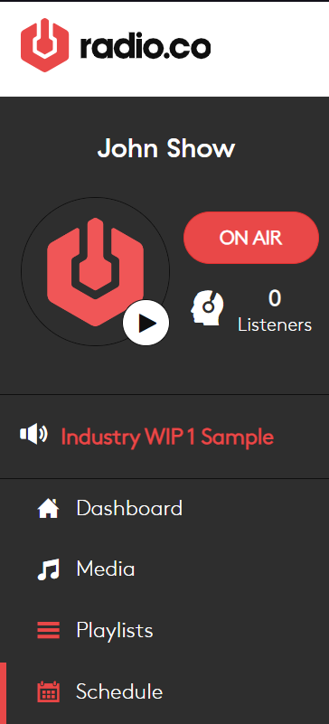From the sidebar, open the Schedule tab, and click the Add Event button on the top right. A popup will open with settings for the scheduled event.
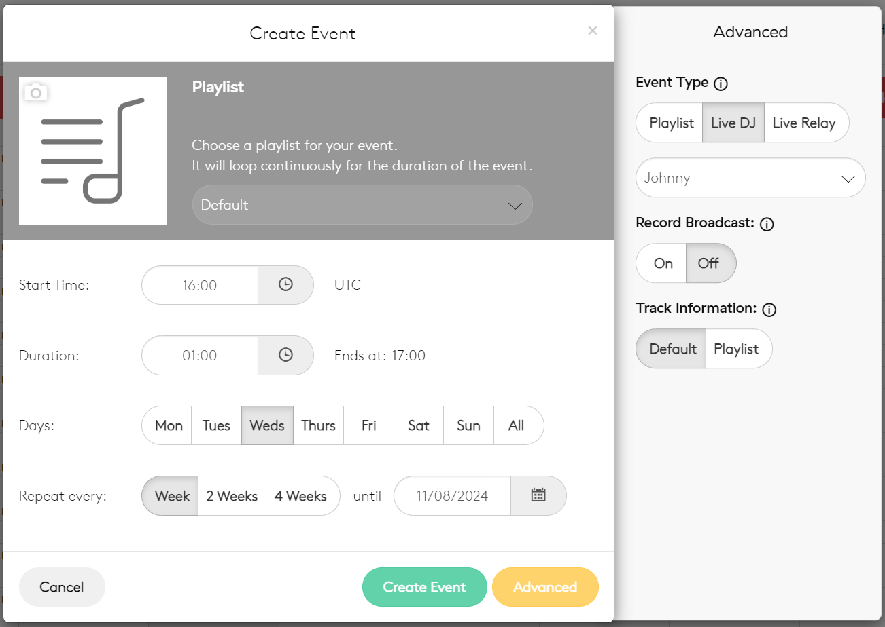From here, you input the start time, duration, and day of the broadcast. You can set it to repeat with an interval of 1, 2, or 4 weeks. The playlist selected at the top will play out if radio.co is not receiving a feed from Utter.
For the purposes of Johnny Utter's talk show, the Event Type will be set to LiveDJ, since that allows you to tell radio.co who the host is. On the right, there is also an option to record the broadcast. Broadcasts that are recorded are saved in the Recordings tab in the Media view. Likewise, you'll want to leave the track information at default, as that way it will use the metadata sent out by Utter.
When you click Create Event, you will see the show added to the weekly schedule. Once you've done that, you need to make sure Utter can actually send a feed to radio.co. Return to the dashboard and find the Host, Port, and Pass details at the top right.
These are the details that Butt needs in order to send its feed to radio.co. To check that they match, open Butt, click settings, and under server settings, click edit. A new wndow will open containing the server Address (host), Port, and Passowrd.
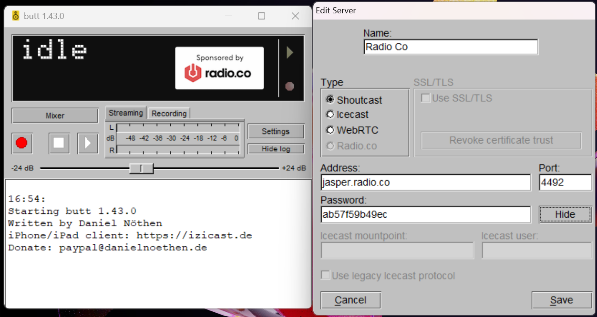As long as these details match, Butt will be able to connect and broadcast Utter through radio.co. From here, all you need to do is make sure Johnny Utter is in the studio on time and press the Connect to Server button Butt at the start of the scheduled show.
Pre-recs
Pre-recoreded content can be uploaded and scheduled on radio.co using the playlists feature. Let's imagine Johnny Utter has recorded and porduced a show in the studio, and wants it to go out every Thursday at 5pm. Before we can schedule this, we need to create a playlist for the pre-recorded show to go into. Open the playlists view, type the name of your new playlist into the search bar, and then click the Add button.
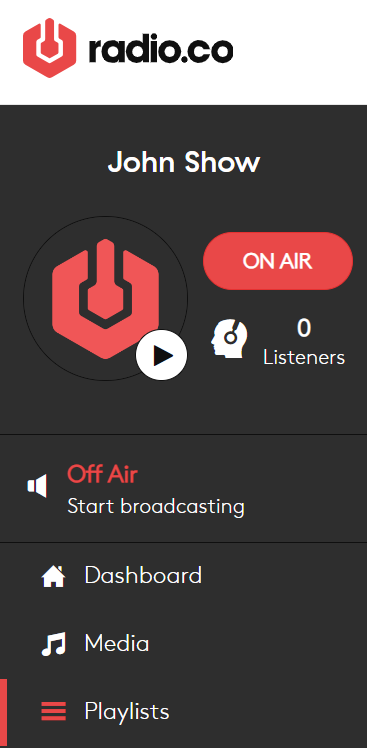 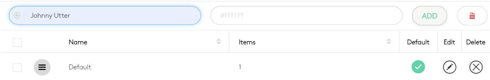Straight away, a window will open asking you to move media into your new playlist. Before you can move it across, you'll need to add your sow to the media pool using the red Add Media button on the top right.
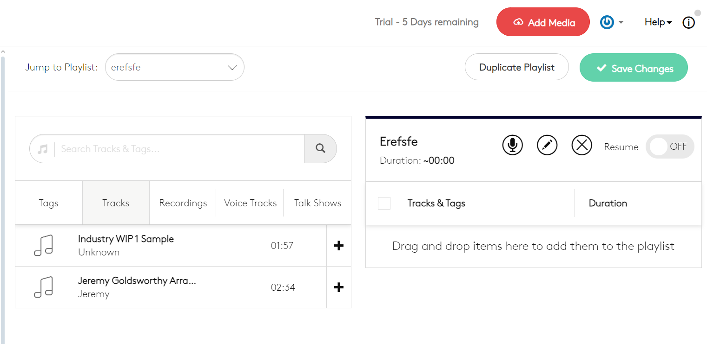Once you've dragged the show into the add media popup, you will need to refresh the page for it to appear in the media list. By default, media will be sent into the "tracks" tab, you will need to upload the shows in the media view in order to put them into other catagories. Click the plus button on the track to add it into the playlist. If you have multiple shows to upload, and want them to play out in chronological order, set the Resume opton to On. This will make the playlist carry on from the end of the last file played on the show.
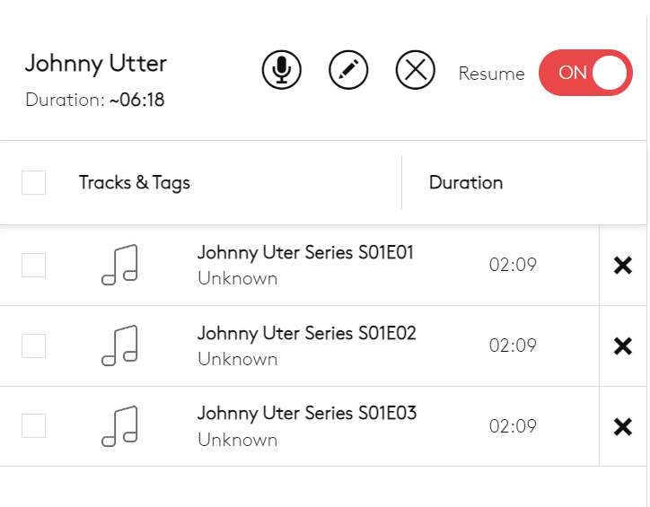Playlists with Resume turned off will restart from the begining on every show. Bear in mind, playlists will always play in order from top to bottom. Even when Resume is turned off. Now that your playlist has been created, you can save changes and move to the Schedule view.
From here, create a new event as you would for a live show, but make sure you set the event type to Playlist, and have the show's playlist selected.
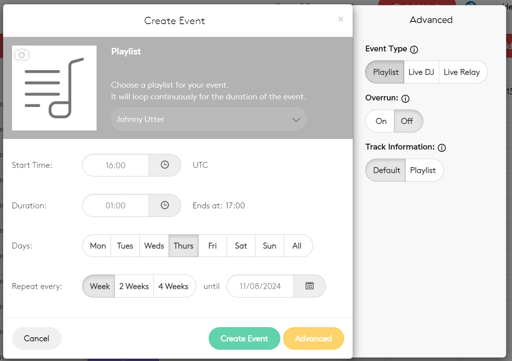Turning Overrun on will ensure that the episode (track) playing at the end of the show will be allowed to finish before the show is cut off - even if this pushes the show over the schedule.
Comprehensive
Dashboard
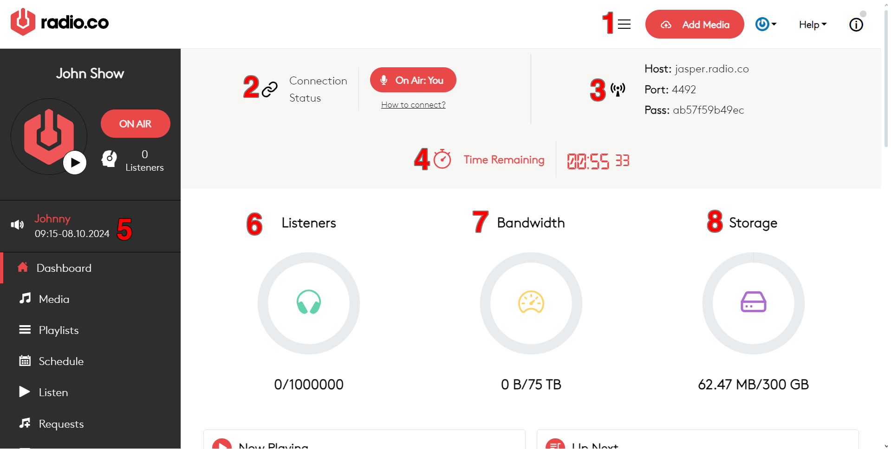- Add Media
- This button brings up a popup that is used to upload pre-recorded material for the station. Files uploaded must be either .mp3 or .m4a and must be smaller than 500 mb. This popup cannot be used to add media into playlists or adjust their metadata, this must be done in the media tab.
- Connection Status
- Indicates whether or not your Radio.Co station is receiving a live feed from the studio. When live, the On Air indicator will turn red and show which computer the feed is coming from, when nothing is connected, the indicator will turn black and show Offline.
- Broadcast Server Details
-
This part of the dashboard contains the details necessary for a streaming tool, such as Butt, to stream its feed to your Radio.Co station.
- HOST represents the stream target. This is the address to which Butt will send its feed.
- PORT is the input channel used by the host server to receive your specific feed. It is used to tell Butt which channel your Radio.Co station is on once it reaches the host server.
- PASS is the password Butt uses to connect its feed. Without a matching password, Butt will not be allowed to connect to the port.
- Time Remaining
- Indicates how much time is left until the currently airing show ends.
- Show Details
- Indicates the name, schedule slot, and date of the currently airing show.
- Statistics
- Indicates how many current listeners you have, how many listeners can connect at any given time (max listeners), how much audio data is being sent out to listeners, and how many gigabytes of pre-recorded content are available on the station.
Media Tracks
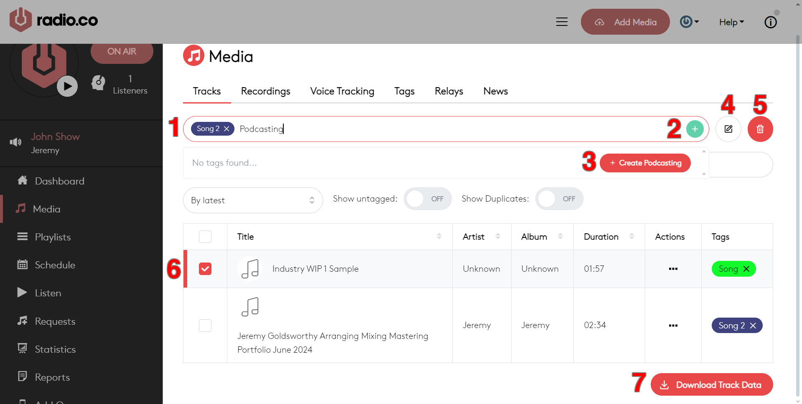- Tags Browser
- Used to search for and choose tags to be applied to tracks. Selected tags are placed inside the search bar, to the left, and available tasks are listed below the search bar.
- Apply Tags
- Adds the tags chosen in the search bar to all tracks you have checked in the track Selection Panel (6)
- New Tag
- Creates a new tag based if the tag you searched for in the Tag Browser doesn’t exist.
- Edit Metadata
- Opens a popup to edit the Artist and Album metadata for all tracks you have checked in the Selection Panel.
- Delete Tracks
- Deletes all tracks you have checked in the Selection Panel
- Selection Panel
-
Used to select any uploaded tracks. Displays their title, metadata, length, and tags. From here, actions can be performed on individual tracks - allowing you to edit their metadata, que them for broadcasting, bring them into the Track Editor, upload them to Podcast.co, or delete them.
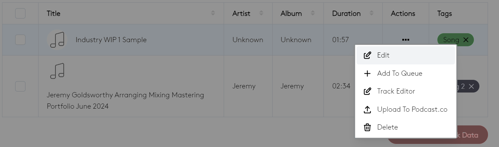 - Download Track Data
- Sends an email containing a spreadsheet with all tracks and their metadata to the user’s email address.
Media Tags
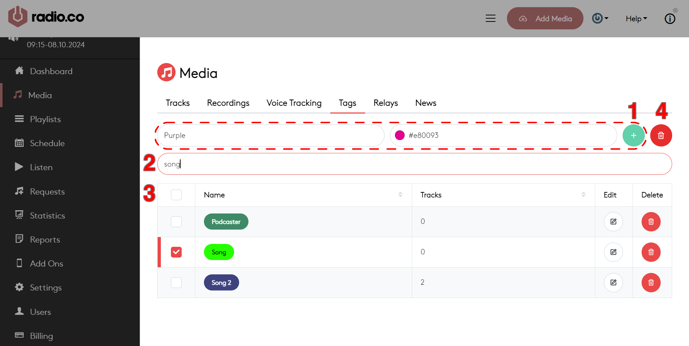- New Tag
- Creates a new tag with the name and colour defined to the left.
- Tag Browser
- Searches for tags from the tag Selection Panel (3).
- Selection Panel
- Displays how many tracks tags have been assigned to. Allows you to select (check), edit, and delete specific tags.
- Delete Tags
- Deletes all tags checked in the Selection Panel. The Tracks, Recordings, and Voice Tracking tabs all use the same interface. Broadcasts that are being recorded are saved automatically in the Recordings tab. Relays and news buletins are not used by Utter Radio, there's no need to visit those tabs unless you want to upset Will.
Scheduling
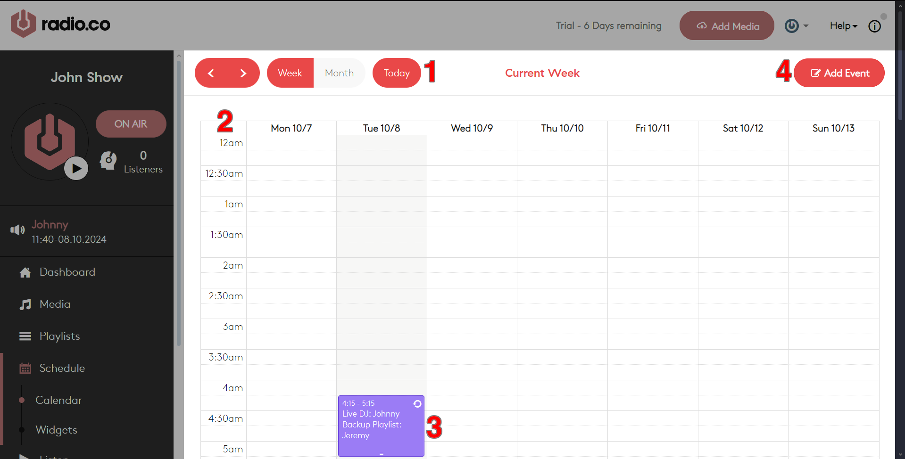- View Options
- These options allow you to switch between either the schedule for a selected week, or an overview of a selected month. Use the arrow buttons on the top right to scroll through weeks and months.
- Calendar
- Displays either a weekly schedule, with a detailed timeline for each day, or an overview of all shows scheduled for a month.
- Show Information
- Shows the details of an upcoming show in the schedule. Clicking on a show will open a popup to edit its details.
- Add Event
-
Opens a popup where events can be added to a the schedule.
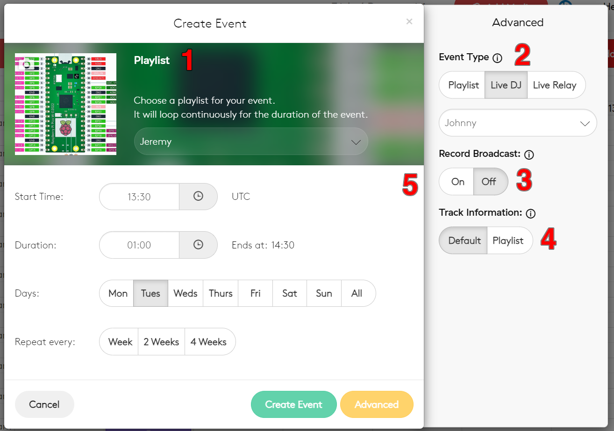- Playlist
- A dropdown menu used to select the backup playlist that is broadcast during the show if no live feed is being sent to the station.
- Event Type
- Used to mark what sort of event is being scheduled. Note that regardless of what event type is selected, a live feed will always take priority over playlists - even during playlist events.
- Record Broadcast
- Only available for LiveDJ events. This option will record and save the event into the Recordings section of the Media view.
- Track Information
- Used to select whether the broadcast metadata will show the name of the playlist, or the name of the file being broadcast.
- Scheduling Options
- The essential settings. Here you set the shows length, its start time, the days on which it is broadcast, and the intervals between which it repeats.
Playlists
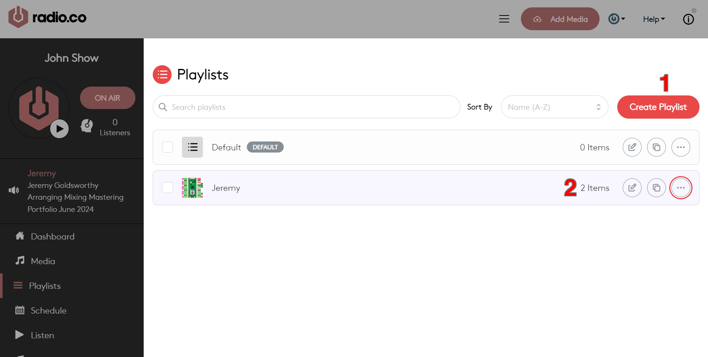- Create Playlist
- Opens a popup to create a new playlist. From here you can set the name, contributor (artist) details, and assigned colour.
- Selection Panel
-
Like with media and tag views, the Selection Panel can be used to delete, edit, and copy existing plalyists. Options in the Selection Panel can also be used to assign a default playlist that will play out while nothing is scheduled. Note that playlists containing no media will not play out, regardless of whether they are told to.
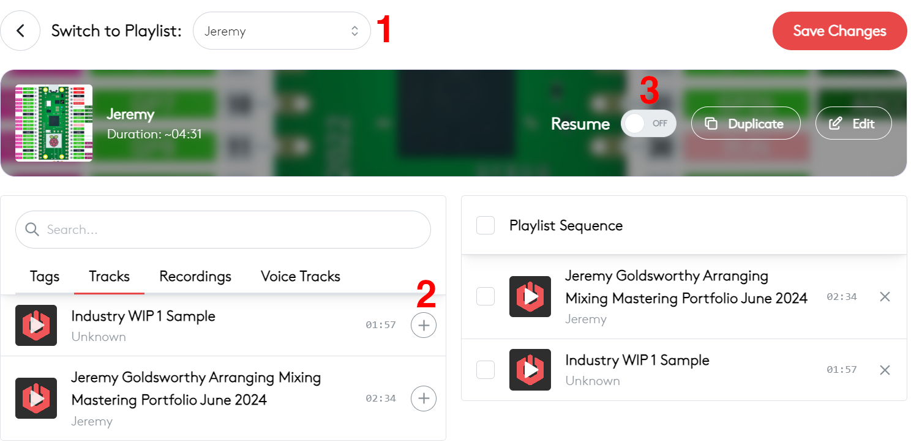- Playlist Selector
- Selects which playlist is being edited.
- Available Tracks
- A list of pre-recorded tracks available on the station. Playlist can feature files from any media catagory - music, voice, and recorded broadasts. Drag tracks into the Playlist Sequence column to add them to the playlist. Dragging tags into a playlist sequence will cause it to play all tracks with that tag.
- Resume Toggle
- With resume disabled, playlists will always begin from their first track when they are broadcast. With resume enabled, a playlist will remember which track it played before it was stopped and will carry on from that track when it is next broadcast.